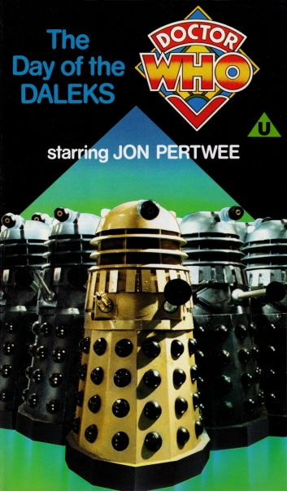

Эра Третьего Доктора (9 сезон)
<<< НАЗАД ||| 1. День далеков ||| ДАЛЬШЕ >>>
Субтитры: Русские и Английские |  |
|---|---|
Субтитры: отсутствуют | |
Субтитры: отсутствуют | |
с обновлением визуальных эффектов (cunningmunki) Субтитры: отсутствуют | |
Дата выхода: 1-22 января 1972
Формат: 4 эпизода по 25 мин.
| Все эпизоды сохранились в цвете (видеокассета PAL 2") |
|---|
 |  помощник |  помощник |  помощник |
В особняк Одерли-Хаус съезжаются делегаты мирной конференции, а ЮНИТ обеспечивает охрану. Внезапно появляются вооружённые люди из будущего — повстанцы, борющиеся против оккупации Земли далеками в XXII веке. Они уверены, что британский дипломат сэр Реджинальд Стайлс виновен в взрыве, который сорвёт конференцию и приведёт к власти далеков, и хотят его убить. Доктор пытается понять, действительно ли смерть одного человека может изменить ход истории. А Мастер тем временем действует за кулисами, и у него свои планы на далеков. Первая встреча Третьего Доктора с далеками и одна из первых историй сериала, построенная на парадоксе времени — повстанцы сами могут создавать будущее, от которого бегут.
 VHS - июль 1986 (фильм) апрель 1994 (эпизоды) | DVD - 12 сентября 2011 |  Blu-ray - 20 марта 2023 * Версия в нашей группе |
|---|


Трейлер: